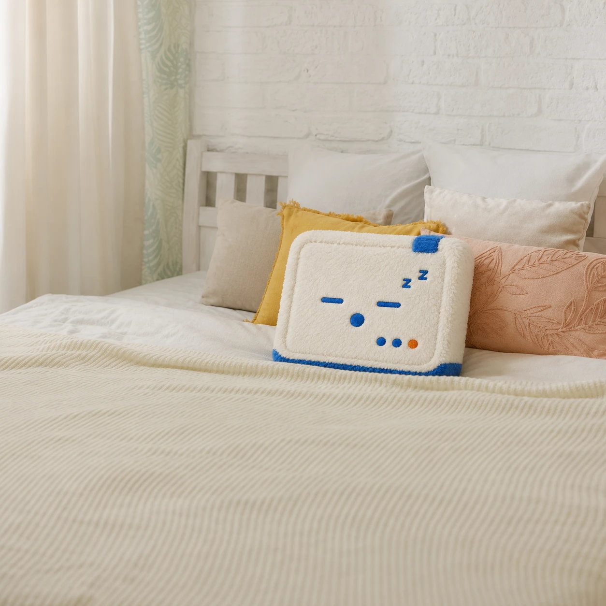
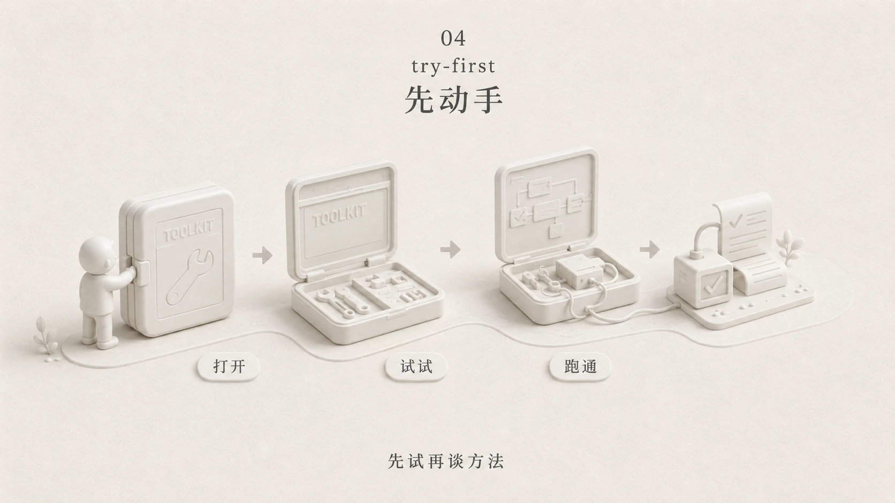
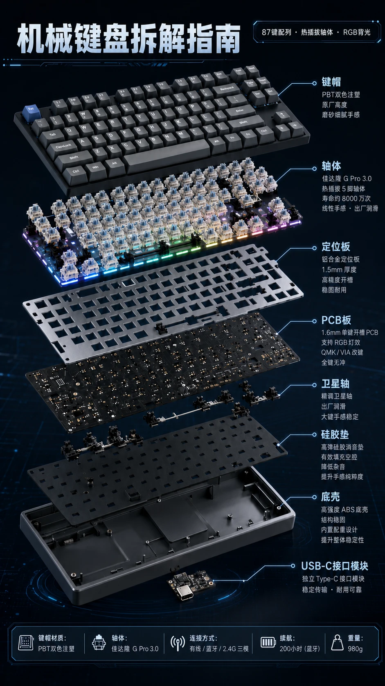
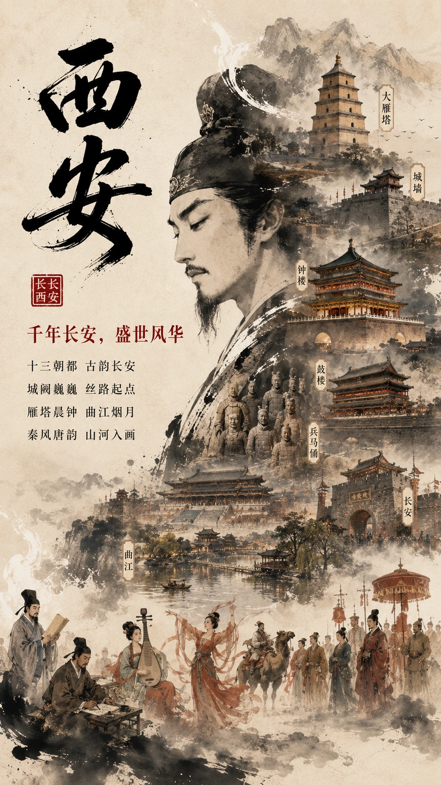
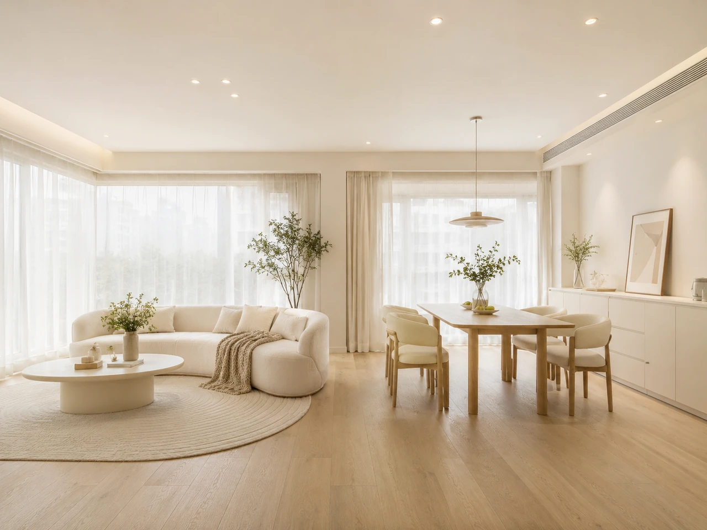
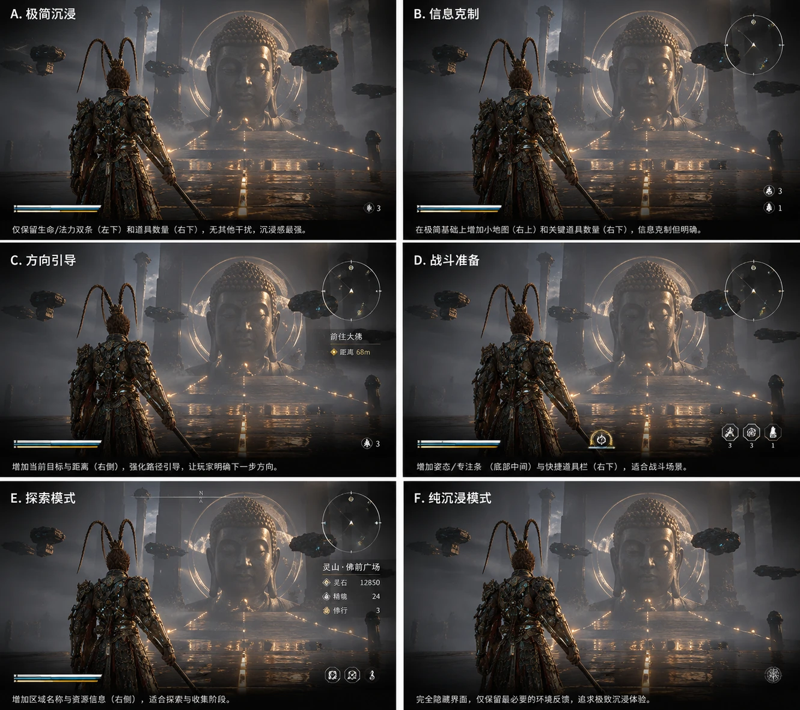

第一部分｜生图工具与落地方向
01｜四大工具
想把脑中的画面做出来，先选一个适合当前任务的工具。
- 即梦：可以直接上手，日常出图先从它开始。
- GPT Image 2：需要中文文字、复杂排版或细致指令时，可以优先试它。
- Midjourney：想探索艺术风格、打磨画面质感时，可以试它。
- Nano Banana：出图快，适合尝试 3D 立体渲染效果。
02｜AI 生图能做什么
三个方向
工具选好了，接着看看这些图能用在哪里。
- 视觉 IP：做一个有性格、认得出的角色，让不同内容拥有统一面孔。
- 品牌全案：让门头、物料和宣传画面沿用同一套颜色、标识与风格。
- 热门创意：一个产品或一个话题，做成讲得清楚、传得开的作品。
先分清任务：视觉 IP 做形象，品牌全案做一套视觉系统，热门创意做单个作品。
视觉 IP
先做出一个认得出的角色，再让它出现在海报、周边等不同内容里。
- 原创 IP 形象：用 AI 做出有辨识度的角色，把它作为后续图片共同参照的样子，也就是视觉锚点。

原创 IP 形象
- IP 落地周边：把角色图作为参考交给 AI，说明想看抱枕、杯子等周边效果，观察形象放进日常实物场景后的样子。

IP 周边实景
- 带 IP 的内容海报：继续提供同一张角色参考图，补充当次主题和文字。角色反复出现，内容逐渐形成统一的视觉识别。
内容海报 · 带 IP
- 无 IP 的文章配图：不适合放角色的文章，可以沿用既定配色、材质和构图习惯，按主题生成风格一致的配图。

文章配图 · 无 IP
品牌全案
从一个 Logo 出发，AI 能铺出一整套品牌视觉。
门头、包装、空间和宣传画面各有用途，放在一起又要像同一个品牌。让它们沿用同一套标志、颜色和风格，就是品牌全案要解决的问题。
把店名、经营定位、使用场景和喜欢的参考图交给 AI，请它提出视觉方向。选定方向与 Logo 后，再延展门头、杯子、围裙和宣传海报。

品牌全案 · 门店与物料
热门创意
把结构、情绪或故事变成可讨论的视觉草案，再选择方向并提出修改。
- 电商详情图：机械键盘爆炸图把各层零件分开摆放，让读者看清结构，也更容易理解产品卖点。

电商详情图 · 机械键盘爆炸图
- 电影分镜：把角色参考和情节交给 AI，让它安排不同景别（人物在画面中的大小）与视角，再用组图讨论镜头衔接。看下面的 12 格时，也要检查每一格是否仍是同一个人。

电影分镜 · 同角色 12 格
- 城市海报：先用较低的成本试出不同视觉方向，再选一张继续打磨。

城市海报 · 西安
从这些用途里选一个与你有关的任务，后面的方法就有了练习对象。
第二部分｜三个精准出图的方法
03｜为什么需要方法
要求太模糊，AI 就容易给出一个常见、缺少特点的版本。
模型从海量图片中学习规律。你只说“好看”“高级”，它就得自己补全造型、颜色和构图，容易落到常见的表达上。想摆脱“都一个味”，就要把自己的选择告诉它。
接下来三个方法，分别用描述、修改和参考，让结果更接近你的想法。
- 提示词精确法：用描述控制。把要画的特征写具体，减少 AI 猜测的空间。
- 局部精修法：用修改控制。满意的部分留下，只改不满意的地方。
- 参考约束法：用参考控制。给它一个明确的形状或样例，让它照着做。
04｜提示词精确法
把抽象感觉变成画面里看得见的特征，减少 AI 对需求的猜测。
逐层叠加
- 造型：方形身体、圆角轮廓、短四肢，说明基本样子。
- 配色：以米白为主、蓝色点缀，明确第一眼的印象。
- 氛围：柔和光线、安静背景、放松表情，传达温和感觉。
- 质感：哑光塑料、毛绒或陶瓷，决定表面观感。
把需要的几层要求连成自然的描述，不必每次全部填满。出图后逐项对照：是造型不对，还是颜色、氛围或质感有偏差？先改最影响用途的一项。
05｜局部精修法
满意的部分保留，不满意的部分单独改。
局部重绘
在支持局部编辑的工具里，先框选要改的位置，再说明要换什么、哪些部分要保留。比如只换角色手里的物件，脸部、动作和背景都不动。出图后不仅看物件改对没有，也要检查选区周边有没有跟着变。
后期修图
如果你会用 PS，可以先导出图片，手动调整位置或细节，再把改好的图交给 AI 继续处理。零基础先用生图工具内的编辑功能；确实需要手动修图时，再请熟悉修图的人帮忙。
常见误区
常见的卡点是：画面大部分满意，一处不对，就重写整段提示词。结果可能连满意的部分也变了。生图往往需要反复调整，先保留好结果，再针对偏差修改。
06｜参考约束法
有些想法很难用语言讲清，给 AI 一张参考图会更直接。
直接参考：手绘草稿到 AI 渲染
先在草稿里定好主体的位置、大小和结构，再拍照或扫描上传，让 AI 补充材质与光影。生成后与草稿对照，重点看它有没有改动你已经确定的位置关系。
间接参考：找参考图让 AI 照着做
找一张喜欢的图，明确告诉 AI 借鉴的是颜色、光线还是材质，主体与场景则换成自己的。风格图帮助确定气质；形状和位置有硬要求时，仍要单独写清。
草稿表达结构，风格图表达气质，两种参考可以配合使用，再通过局部修改解决偏差。
第三部分｜三个快速启动的技巧
07｜三个技巧
第一次上手不需要从零摸索，这三个技巧分别解决三个卡点。
- 提示词架构师：说不出来的时候用。让 AI 反过来问你，把你的模糊创意翻译成能执行的提示词。
- 图片反推提示词：看到好图不会做的时候用。让 AI 把图拆开，还原出可以复用的提示词。
- 一图多方案：方向定不下来的时候用。一张图同时出多个变体，省去逐张抽卡的时间。
先看自己卡在写描述、拆风格还是选方向，再用对应的技巧。
08｜提示词架构师
说不清画面的时候，让 AI 反过来问你。
把下面的完整提示词发给能进行文字对话的 AI，再告诉它你想做什么。它先帮你写生图提示词，缺少关键信息时会追问。按实际需要回答，拿到整理好的提示词后，再交给生图工具出图。
这份设定沿用即梦 Seedream 5.0 Lite 作为默认适配对象。使用其他模型时，在输入里写明当前工具与型号，让 AI 按指定目标组织描述。
角色：文生图提示词架构师
任务
将用户提供的创意、关键词或参考图，转化为准确、简洁、可直接使用的文生图提示词。只编写提示词，不直接生成图片。
模型适配
- 用户指定的模型与平台优先；未指定时默认按即梦 Seedream 5.0 Lite 编写，备选顺序为 GPT Image 2、Midjourney。
- 即梦 / GPT Image：使用清晰的自然语言，短句为主，复杂要求分句表达。
- Midjourney：使用精炼的画面描述，末尾添加适用的 --ar；确有排除需求时添加 --no。
- 只使用已确认适用于目标模型和平台的参数；不确定时使用通用描述，不编造参数。
开局判断
- 信息足以形成明确画面：直接输出。
- 信息过于宽泛或存在关键冲突：只问最影响结果的 1–3 个问题，每题提供 2–4 个简短选项，最多追问一轮。
- 提问时同时提供一套合理初稿，并注明“以下按【默认方向】拟定，可继续调整”。
- 不重复询问已提供的信息；非关键缺项自行合理补全。
编写规则
1. 优先保留用户明确指定的主体、数量、动作、风格、用途和限制，不擅自更换主题。
2. 按需组织：主体与动作 → 场景与空间关系 → 构图与视角 → 风格、色彩与材质 → 光影与氛围 → 必要约束。无关项省略，不机械填满。
3. 使用具体、可见的描述。将“高级感”等抽象要求转化为构图、配色、材质或光线特征；避免堆砌“神作、顶级、超高清”等空泛词。
4. 数量、位置、形状和比例需要精确时直接写明；比喻仅作辅助，不替代关键结构。
5. 按题材选择视觉细节，不默认给所有画面添加写实、电影光效、复杂材质或渲染术语。
6. 有参考图时，明确借鉴的特征、需要保留的内容和需要改变的部分；无法读取时说明，不臆测。
7. 画面需要文字时，用引号标明准确文案，说明语言、位置和层级；未要求时不主动添加文案。
8. 排除要求按需表达：平台支持独立负面提示词时单列，否则写入正文；不套用通用负面词清单。
9. 输出前检查主体、数量、空间关系、风格和约束是否冲突，删除重复描述。简洁不以丢失关键要求为代价。
默认输出
1. 画面概述：一句话。
2. 提示词：单独放入代码块，方便复制。默认中文；Midjourney 默认英文，需要画内文字时保留原文。
3. 建议画幅：给出一个比例；必要时补充平台设置或负面提示词。
默认只给一套。双语版本、构思说明、多套备选和参数细调，仅在用户要求时提供。
内容边界
不编写真实公众人物的生成提示词；版权角色复刻仅在用户明确说明已获相关授权、且符合目标平台规则时处理。
用户输入
【创意 / 关键词】
【参考图（可选）】
【目标模型与平台（可选）】
【用途与画幅（可选）】
【必须保留或避免的内容（可选）】
它产出的东西长什么样
比如想做室内设计，可以先告诉 AI“我想生成一张室内设计效果图”，再根据它的提问补充空间用途、喜欢的风格和画幅。拿到它整理好的提示词后，粘贴到即梦的图片生成入口，选择合适画幅并生成。
下面是室内空间的产出示例。拿到自己的结果后，可以接着说“保留整体布局，把木色调浅一点”，让修改围绕已经选定的方向继续。

提示词产出示例 · 室内空间
09｜从图片反推提示词
看到好图，让 AI 帮你拆出可以复用的提示词。
把喜欢的图片和下面的提示词一起发给能读图的 AI，并说明你想换成什么内容。它会尝试分开两件事：哪些是要保留的风格，哪些是可以替换的主体、动作和场景。
角色：图像风格反推专家
目标：根据参考图提炼可复用的风格提示词，让不同内容也能生成同风格图片。
工作流程：
1. 读图：区分内容与风格，提炼造型、线条、材质、色彩、光影和构图规律；多图复杂时使用 subagent。
2. 写词：将风格固定，将主体、动作、场景设为变量，输出简洁、具体的提示词。
3. 生图：使用内置生图工具，以新主题生成图片，验证风格迁移效果。
4. 对比：按上述视觉特征对比参考图，只修正主要偏差，最多迭代 3 轮。
5. 沉淀：输出最终提示词，并封装为含输入变量、生成流程和验证标准的 SKILL.md。
要求：不把原图内容当作风格；工具不可用时直接输出提示词与 skill 文本，不虚构验证结果。
比如你喜欢一张插画的柔和颜色和纸张质感，就让 AI 保留这两点，把主体换成自己的产品。用反推的提示词生成新图，与参考图比较颜色和质感，指出主要偏差再修改。这份描述才是以后可复用的部分。
这份提示词还包含自动生图、对比和封装技能文件的要求。支持相应工具的 AI 可以继续执行。若工具不具备这些能力，就使用它输出的提示词与技能文本，把提示词复制到生图工具里完成生成与比较。
10｜一图多方案
方向还没定，就把几个方案放在一张图里比较。
想法已经有了，却拿不定哪种表现更合适时，可以上传当前图片，让 AI 在同一张图里排出多个变体。说明哪些内容固定、哪些地方可以变化，方案之间就更容易比较。
- 省时间：一张图里就有多个变体，不用逐张「抽卡」。
- 敢多试：先用一张图探索几个方向，尝试的负担更小。
- 有惊喜：多个方案放在一起，也可能带出你原先没想到的方向。
- 好拍板：一张图发给客户或同事，指着挑就行。
下面这张图一次给出了游戏界面的六个方案，从极简沉浸到纯沉浸模式，方向差异一眼可见。

一图多方案 · 游戏 UI 六方案
选中方向后，截取对应区域交给 AI，请它单独生成这个方案，再继续精修。先比较方向，再打磨细节，就不用在还没选定的方案上花太多功夫。
小结
- 工具各有所长，选择要看用途：日常出图从即梦起步，遇到文字排版、风格与质感等具体需求，再选择合适的工具。
- 视觉统一，让内容相互呼应：围绕一个角色或一套品牌风格延展图片，能让不同场景里的内容保持共同的面孔。
- 明确的要求让结果更贴近自己的想法：把描述写具体，用局部修改完善细节，再借助参考图固定方向，就能逐步形成自己的表达。
- 创作卡住时，可以让 AI 帮忙打开思路：选一个自己的出图任务试试。说不清就让它提问，看到好图就拆风格，方向难定就把多个方案放在一起比较。